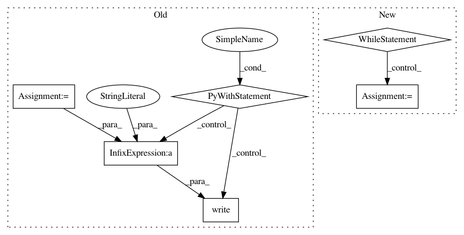

982740ee6e56d674e3f220d7bf215ae4132c9c1c,magenta/models/onsets_frames_transcription/onsets_frames_transcription_infer.py,,main,#Any#,263
Before Change
os.path.expanduser(FLAGS.acoustic_run_dir), "train",
FLAGS.acoustic_checkpoint_filename)
else:
acoustic_checkpoint = tf.train.latest_checkpoint(
os.path.join(os.path.expanduser(FLAGS.acoustic_run_dir), "train"))
run_dir = os.path.expanduser(FLAGS.run_dir)
hparams = tf_utils.merge_hparams(
constants.DEFAULT_HPARAMS, model.get_default_hparams())
hparams.parse(FLAGS.hparams)
// Batch size should always be 1 for inference.
hparams.batch_size = 1
tf.logging.info(hparams)
tf.gfile.MakeDirs(run_dir)
with tf.gfile.Open(os.path.join(run_dir, "run_config.txt"), "w") as f:
f.write(acoustic_checkpoint + "\n")
f.write(FLAGS.examples_path + "\n")
f.write(str(hparams) + "\n")
model_inference(
acoustic_checkpoint=acoustic_checkpoint,
hparams=hparams,
examples_path=FLAGS.examples_path,
After Change
assert not FLAGS.checkpoint_path
checkpoint_path = None
while True:
checkpoint_path = tf.contrib.training.wait_for_new_checkpoint(
FLAGS.model_dir, last_checkpoint=checkpoint_path)
model_inference(
model_dir=FLAGS.model_dir,
checkpoint_path=checkpoint_path,
hparams=hparams,
examples_path=FLAGS.examples_path,
output_dir=output_dir,
summary_writer=summary_writer,
write_summary_every_step=False)
else:
model_inference(
model_dir=FLAGS.model_dir,
checkpoint_path=FLAGS.checkpoint_path,
In pattern: SUPERPATTERN
Frequency: 3
Non-data size: 6
Instances
Project Name: tensorflow/magenta
Commit Name: 982740ee6e56d674e3f220d7bf215ae4132c9c1c
Time: 2019-02-22
Author: fjord@google.com
File Name: magenta/models/onsets_frames_transcription/onsets_frames_transcription_infer.py
Class Name:
Method Name: main
Project Name: pantsbuild/pants
Commit Name: 7dcc1b532d21e47c98ba2422cab7d48360149f89
Time: 2013-10-06
Author: benjyw@gmail.com
File Name: src/python/twitter/pants/tasks/nailgun_task.py
Class Name: NailgunTask
Method Name: _await_nailgun_server
Project Name: pantsbuild/pants
Commit Name: 6101d42a47f4dca09a862090f7665bf83373f9d8
Time: 2013-07-29
Author: benjy@foursquare.com
File Name: src/python/twitter/pants/tasks/nailgun_task.py
Class Name: NailgunTask
Method Name: _await_nailgun_server